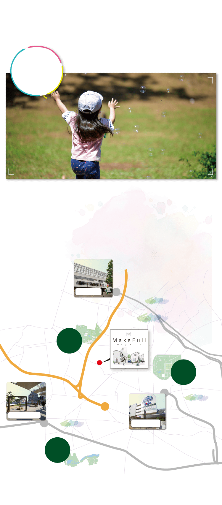
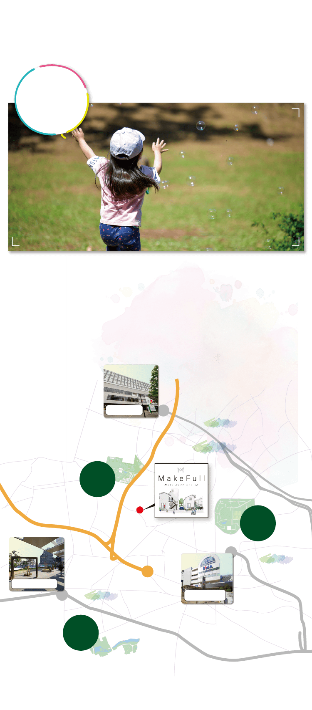
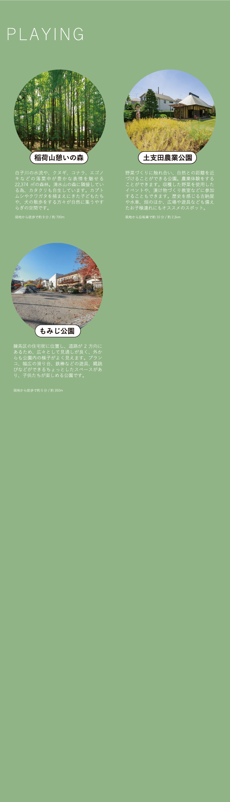
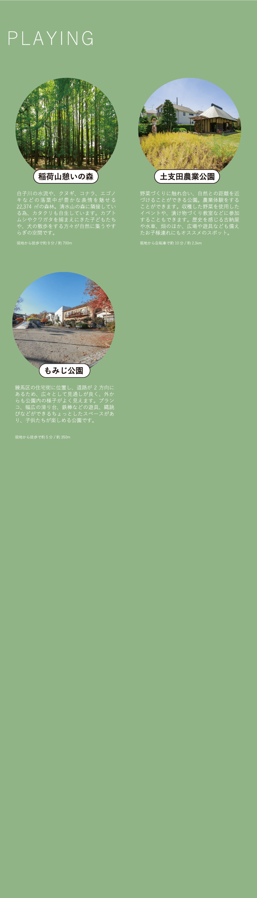

西武池袋線
「大泉学園」駅
バス11分「もみじ山」停歩4分or自転車16分（約3.7km）
改札を出ると大泉アニメゲートがお出迎え。鉄腕アトムや銀河鉄道999、あしたのジョーなどのキャラクターのブロンズ像が展示されています。アニメの聖地、練馬区を象徴するスポットです。
東京メトロ副都心・有楽町線／東武東上線
「和光市」駅
バス10分「もみじ山」停歩4分or自転車14分（約3.2km）
都心ターミナルへ直通というアクセス力を持ちながら、2路線始発利用というＷ利便性。平日にはそれぞれ100本を超える都心方面への始発電車が出ています。さらに、「羽田空港」直通のリムジンバスも利用可能。

都営大江戸線
「光が丘」駅
バス10分「土支田二丁目」停歩8分or自転車約10分（約2.4km）
都営大江戸線の始発＆終点である光が丘駅。四季折々の自然を堪能できる周辺の環境が魅力的です。駅直結のショッピングセンターには、イオン練馬店やリヴィン光が丘店、IMA専門店街が入っており、日常的な買い物に困ることはありません。


Hikarigaoka Park
光が丘公園
自転車で約11分（約2.5km）
600,000㎡を超える面積で、葛飾区の水元公園、江戸川区の葛西臨海公園、足立区の舎人公園に次ぐ、23区最大級の広さを誇る公園。スポーツやピクニック、お散歩など、老若男女がそれぞれの大切な時間を過ごす憩いの場として、地域に愛されています秋が深まる頃には、美しいイチョウ並木が黄金色に光り耀き、季節の風情を堪能させてくれます。

Oizumi Central Park
大泉中央公園
自転車で約6分（約1.3km）
旧陸軍士官学校の敷地の一部から変化し続け、返還後の1990年にオープンした歴史ある公園。約103,000㎡に及ぶ広大な園内には、武蔵野の風情薫る自然から、子どもが走り回る広場、アスレチックの他、スポーツ競技場まで設置され、1年を通して季節に応じた様々なイベントも開催されています。都立公園の中ではめずらしいバタフライガーデン、野鳥の森などもあり、都会の喧騒を忘れさせてくれる憩いの空間。

Shimizuyama Forest
区立清水山の森
徒歩で約4分（約0.2km）
東京23区内では唯一となっている大規模なカタクリ群生地です。その数は約10万株と言われるほどで、早春には薄い紫色の可憐な花々が咲きます。園内の中心部には「東京の名湧水57選」に選定された泉が湧きだし、美しいせせらぎが白子川に流れ込んでいきます。


Nakazato Local Forest
中里郷土の森緑地
徒歩で約5分（約0.4km）
100年以上古くから残された武蔵野の屋敷林を活かした公園。自然解説員なる専門知識を持ったスタッフさんが常駐し、五感を使った自然遊びのほか、室内講座やものづくり、実験などさまざまなテーマと手法で定期プログラムを開催しています。夏にはヘイケボタルを鑑賞できる人気イベントも開催。虫取り網や双眼鏡など、観察道具は貸出されているため、手ぶら訪れても楽しむことができます。
 


江戸時代初期から続いていると言われている歴史ある農園。東京23区内ではめずらしい新鮮な東京アスパラガスを中心に、約30～40品目のお野菜を販売しています。近所のスーパーだけでなく農園の直売所でも購入可能。お野菜の販売だけでなく、体験農園も開催している区民に人気のスポットです。


白石農園
代表 白石 好孝さん
「練馬区は、西武線や副都心線でわりとアクセスが良くなったので、都心にも短時間でいけるのが良いのかなと思いますね。公園や緑が多いので、生活もしやすい。また、農業観点から言えば、23区内では圧倒的に練馬区の農地面積が広いので、こだわりのある新鮮な野菜をたくさん購入できます。」


Elementary School
練馬区立八坂小学校
徒歩で約12分（約900m）
裏を流れる白子川や、生い茂る木々、野鳥の歌声に囲まれた緑豊かな環境。運動会等のイベントの他、音楽教育、ＩＣＴ教育、食育、伝統文化の継承などの文化的な取り組みから、幅広い教養や社会的なスキルを身につけることができます。
Junior High School
練馬区立八坂中学校
徒歩で約12分（約900m）
八坂小学校同様、自然豊かな環境に囲まれた学校です。文化部活動の強化、多彩な学外活動、ＳＴＥＭ教育の推進、グローバル教育等が特徴的。児童たちに幅広い知識やスキルを身に付けさせ、自己成長を促進させるこの学校は、まさに練馬というエリアを象徴しているのではないでしょうか。
Kindergarten
中里幼稚園
徒歩で約8分（約630m）
「遊び」を通して子どもたちの自主性や創造性を育む教育を大切にしている幼稚園。自然に囲まれた豊かな環境を活かし、自然の中での遊びや観察を通じて環境に対する理解や尊重の意識を養う試みが特徴的です。他にも、豊富な体験活動、家庭的な温かい雰囲気、地域との連携性なども評価されています。


「子育てに関する情報を共有する」「子育て支援の充実と質の向上を図る」「地域で子どもを育てあう環境をつくる」を主要の目的に活動する、任意のボランティア団体。実際にそこで暮らしながら子育てしている人でないと分からない「生の声」を知ることができる、わかりやすく信頼できるコミュニティの場として地域を支えています。会員のママさんたちが共同で運営している『ねりこそ＠なび』 では、子育てに関するさまざまな有益情報を更新しているので、これから子育てを始めるお父さん、お母さんはぜひ一度ご覧になってみてください。

匿名
会員のママさんたち
「マンションや戸建分譲が次々と出てきて、子育て世代が多く入ってきている印象を受けます。街を歩けば一目瞭然ですが、子連れの家族が本当に多い。子どもも大人も、お年寄りも、住みやすいのかなと感じています。」